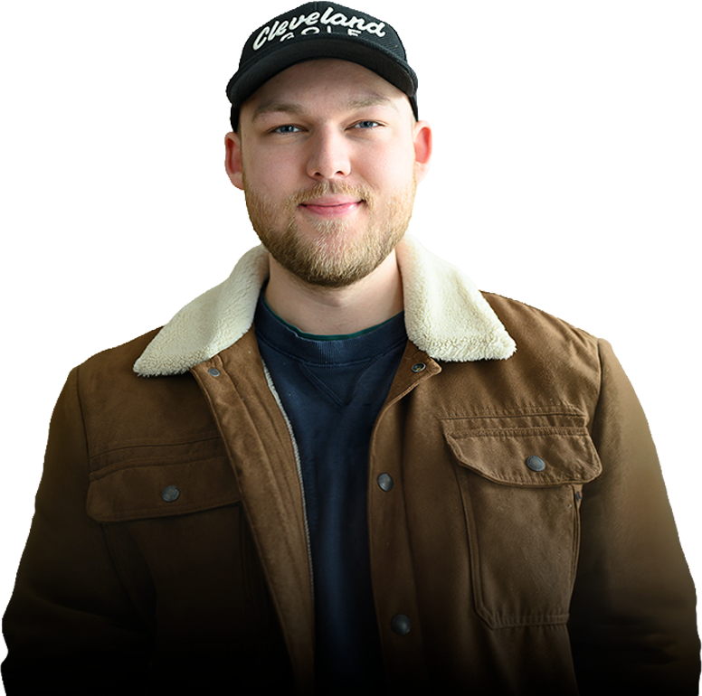

01 / 02
Fodbold
Fodbold har været en stor del af mit liv i mange år. Jeg elsker både at spille, træne målmænd og være en del af fællesskabet på banen.
Multimediedesigner under uddannelse · Web, design og interaktion
Jeg bygger digitale oplevelser, hvor idé, visuelt udtryk og funktion hænger sammen. Min retning er webudvikling, spil, grafisk design og projekter, der føles levende at bruge.

Jeg er en nysgerrig multimediedesignstuderende, der oprindeligt kommer fra Svinninge. Kan godt lide at lære nye ting og interesserer mig især for design, computerspil og sport, Jeg trives både med kreative projekter, håndværk og digitale løsninger,
Jeg interesserer mig for både den kreative og tekniske side af digitale projekter. Det kan være alt fra at designe og kode en hjemmeside til at udvikle et spil, arbejde med 3D eller skabe grafisk indhold.
Før multimediedesign havde jeg allerede erfaring fra flere forskellige arbejdspladser. Det har lært mig at møde til tiden, tage ansvar, arbejde selvstændigt og samtidig være en del af et hold.
Fodbold har været en stor del af mit liv i mange år. Jeg elsker både at spille, træne målmænd og være en del af fællesskabet på banen.
Jeg holder meget af computerspil – både for udfordringerne, historierne og de kreative universer. Gaming inspirerer mig også, når jeg selv arbejder med design og spil.
Zealand · Køge
Arbejde med webudvikling, digitalt design, brugeroplevelser, innovation, kommunikation og interaktive løsninger mm.
Absalon · Slagelse
Påbegyndt uddannelse inden skiftet til den mere kreative, visuelle og digitale retning.
Stenhus Gymnasium · Holbæk
EUC Nordvestsjælland · Holbæk
Ishøj · Sommerjob / deltid
Erfaring med fysisk arbejde, lager, tempo og samarbejde i en travl hverdag.
Svinninge · Sommerjob / deltid
Praktisk arbejde med ansvar, selvstændige opgaver, lager, logistic, kundeservice, kundehåndtering, transport, reparationer af elektronik og maskiner, samarbejde med andre firmaer, eventarbejder, medier og samarbejde gennem flere sæsoner.
Svinninge
Ishøj · Deltid
Har du et projekt, en idé eller vil du bare høre mere om, hvordan jeg arbejder med design og digitale oplevelser, så er du altid velkommen til at tage kontakt.
Kontakt mig ↗